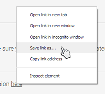
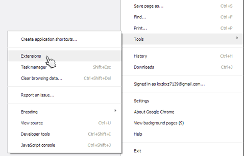
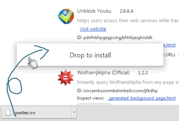
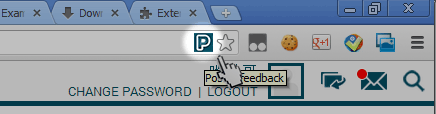

Thank you, thank you, thank you!
Thank you for your support to help us do better! You can install the extension as follows:
Step 1
Make sure you're using Google Chrome (latest)
Step 2
Right click
here to "save link as".

Step 3
Open Chrome's extension manager page.

Step 4
Drag the downloaded file into the extension page to install.

Usage
After refreshing Postiles tab, or restarting Chrome, now you'll find the button on the right of your address bar. Click it to send feedback!
